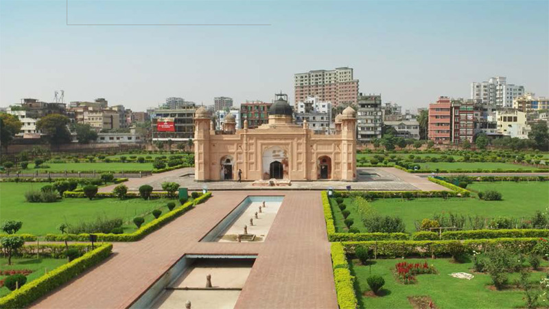

-

孟加拉bKash：移动支付带来便利生活
bKash作为BRAC银行的合资子公司，为孟加拉人提供移动金融服务。bKash简化货币从城市转移到农村的方式，为孟加拉国经济发展做出关键贡献，并持续改变当地人的生活方式。
-
 光大银行IT系统“瘦身”记
光大银行IT系统“瘦身”记
近几十年，金融业成为信息技术和网络技术发展的最大受益者之一。上世纪90年代末，金融业充分利用信息科技的进步，带来各类金融产品的升级和服务、管理手段的提高，实现了金融业的“数据大集中”，也就是业内所说的“大集中1.0”。近几年，随着金融行业业务和云计算技术的突飞猛进，金融机构也正向“大集中2.0”模式悄然转变。
-
 哈马德机场：轻松管理海量监控数据
哈马德机场：轻松管理海量监控数据
卡塔尔位于欧亚大陆中部，理所当然地成为众多旅行和商务人士的中转地。位于卡塔尔首都多哈的哈马德机场，占地2200公顷，在2014年4月30日正式启用，年均客流量为2900万人次，预计每年最多可处理5千万客流、32万架次航班，以及200万吨货物。